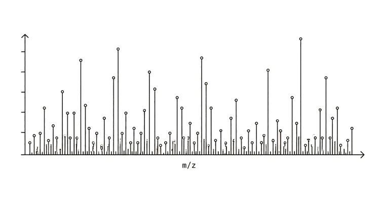
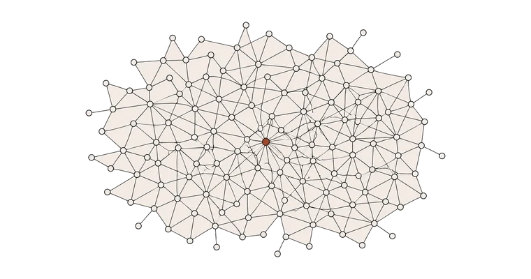
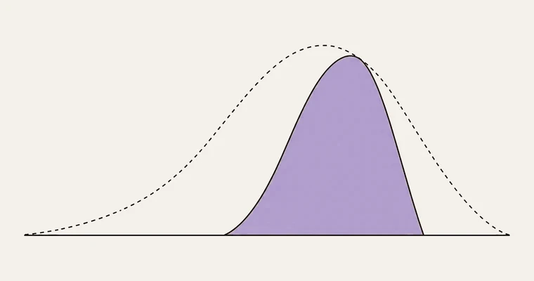

Tastry's model isn't a sentiment classifier or a recommendation engine. It is a chemistry-first model of human preference. The first system to learn how molecules become feelings, and then use that knowledge to predict what consumers will love before a product exists.
A century of CPG R&D has worked by collecting descriptors (fruity, smooth, clean), then trying to engineer ingredients that match the language. The problem: language is downstream of feeling. A consumer who says they like cherry will reject a wine engineered to taste like cherry.
Validated inference 01. Words do not predict preference.
Tastry captures the full symphony of chemistry inside a product in our proprietary in-house lab, then learns the emergent interactions that drive what humans actually feel. No descriptors. No survey loops. The chemistry is the cause, so we model the cause, not the echo.
Validated inference 02. Traditional chemistry alone is not enough either. Emergence matters.
Analytical instruments report concentrations of individual analytes. A human nose doesn't. Preference is the interaction of countless compounds at once. Without modeling the interaction, the chemistry is just inventory.
Benzaldehyde is "cherry" to one person, "marzipan" to another, "nutty" to a third. Mapping a descriptor to an analyte is a one-to-many problem in both directions. It's the wrong unit of analysis.
Aversion is sharper signal than affection. A model that only learns from likes systematically over-recommends products that consumers tolerate but never love. Tastry's training set captures negative preference with equal weight, which is why the prediction holds.
Optimizing for broad popularity creates the bland middle: products everyone tolerates and no one loves. Tastry models the popularity-versus-distinctiveness trade-off explicitly, so brands can choose the curve they want to live on instead of accidentally living on the worst one.
Outside a lab vial, no compound is ever experienced on its own. Every product is a dense mixture, and a molecule's effect depends entirely on the hundreds of others around it. Studying analytes one at a time describes a world that doesn't exist. Tastry models the full mixture, the way a consumer actually meets it.
Brands tend to chase the highest possible average score. That instinct produces products with broad mild appeal and no committed fans. Real preference lives further out, in formulations that some people love deeply, even if not everyone agrees.
A "9 out of 10" from one consumer and a "9 out of 10" from another can be the same number for very different reasons. Tastry's model breaks that ambiguity apart. It predicts who will love a formulation, how strongly, and how that pool of love overlaps with the pool of people you can actually reach.
For brand strategy, this changes the question. Instead of "which product has the best average score?" the right question becomes "which product has the highest density of love inside our addressable audience?" Those are different products, and they are almost never the one a focus group picks.
The popularity-distinctiveness trade-off is the most expensive mistake in CPG. We make it visible, so it stops being a mistake.
You don't have to choose. Let us help you optimize for both.
Conventional analytical chemistry samples a product compound by compound, then summarizes. Tastry does not summarize. We capture every analyte simultaneously in our proprietary in-house lab, preserving the emergent interactions that human perception actually responds to.
Hundreds of compounds inside a single product, measured simultaneously in our proprietary in-house lab. No sampling. No summarizing.

The model learns how those compounds combine, not just what they are. Emergence is the signal traditional methods discard.

From chemistry alone, the model outputs how a real population will feel about a product that does not yet exist.

The technology is the product. The data is the moat. Tastry's defensibility is not only algorithmic novelty. It is a proprietary signal nobody else has captured, protected by patent in four countries, architected to scale at margins foundation models cannot match, and trained first on the hardest sensory category on earth.
Tastry's chemistry signal is captured in-house, product by product. There is no public source. There is no shortcut. Building a comparable dataset would require an analytical chemistry lab, a sensory science discipline, and a decade of work in a single category before the model is useful in a second.
U.S. Patent No. 11,847,684. Issued in the United States, China, Japan, and Canada. The method that connects chemistry to consumer preference is legally exclusive across the four largest CPG-producing economies on earth.
Tastry is a first-principles model, not a foundation model. The system runs on specialized signal nobody else has captured, at margins brute-force compute cannot match. Roughly 97% gross margin at scale, and the efficiency gap widens as competitors throw more GPUs at the wrong problem.
Wine has hundreds of thousands of chemistry signals per bottle and the most preference-driven consumer in the world. Training the model on the hardest signal first means every category after wine is structurally simpler. The moat compounds with every node we add.